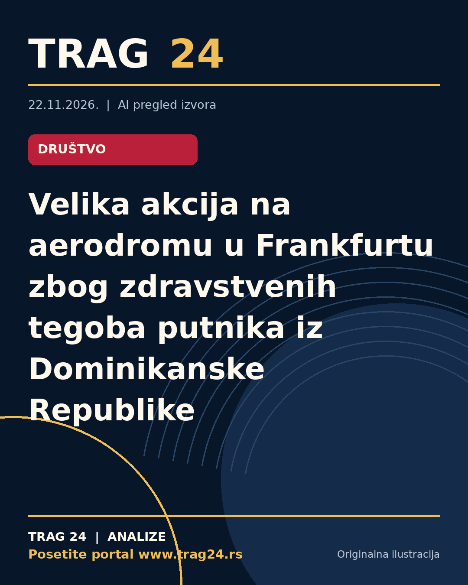

Velika akcija na aerodromu u Frankfurtu zbog zdravstvenih tegoba putnika iz Dominikanske Republike

ŠTA SE DOGODILO
Na aerodromu u Frankfurtu aktiviran je alarm za masovni prijem povređenih i obolelih (MANV 25) nakon što je više putnika u dva aviona kompanije Kondor prijavilo zdravstvene tegobe po sletanju iz La Romane u Dominikanskoj Republici. Hitne službe i vatrogasci intervenisali su na pistu, dok je medicinsko osoblje pregledalo putnike neposredno po dolasku. Po jedna osoba iz svakog aviona prevezena je u bolnicu, dok su ostali nastavljali putovanje nakon pregleda.
HRONOLOGIJA
Avioni su ujutru sleteli na aerodrom u Frankfurtu, a oko 9.19 časova aktiviran je alarm MANV 25. Kompanija Kondor je obavestila aerodrom o zdravstvenim tegobama putnika tokom leta, pa su nadležne službe bile spremne. Lekari su nakon sletanja krenuli sa pregledima, a dodatne ekipe hitne pomoći i vatrogasci su upućeni na lokaciju. Većina putnika nije zahtevala bolničko lečenje i nastavila je putovanje posle pregleda.
ŠTA NAVODE IZVORI
Izvor Kurir, Telegraf i Blic navode da putnici u avionima kompanije Kondor sa leta iz La Romane prijavljuju iznenadne simptome bolesti. Postoji sumnja da je uzrok infekcija norovirusom, koja izaziva mučninu, povraćanje i dijareju. Norovirus je veoma zarazan i može brzo da se proširi. Postoji pretpostavka, ali nije potvrđeno, da su putnici možda bili na istom kruzeru pre leta, što bi moglo objasniti slične simptome u oba aviona.
ŠTA JE POTVRĐENO
Potvrđeno je da su dva aviona Kompanije Kondor iz Dominikanske Republike sletela u Frankfurt gde je više putnika prijavilo zdravstvene tegobe. Aktiviran je alarm za masovni prijem obolelih, a angažovane su hitne službe i vatrogasci. Po jedna osoba iz svakog aviona prevezena je u bolnicu, dok su ostali pregledani i nastavili putovanje. Sumnja na norovirus se istražuje, ali još nije potvrđena.
ŠTA NIJE POTVRĐENO
Nije potvrđeno gde su putnici tačno zaraženi niti da li je kruzer koji su možda ranije koristili povezan sa pojavom simptoma. Nije utvrđeno ni da je tačno norovirus uzrokovalo tegobe, iako se zbog simptoma i zaraznosti taj virus trenutno najčešće pominje.
ŠTA OSTАJE OTVORENO: Ostaje nepoznato poreklo infekcije i detaljnije okolnosti koje su dovele do pojave simptoma kod putnika u dva različita aviona. Takođe ostaje da se potvrdi da li je norovirus zaista bio uzročnik zdravstvenih problema i na koji način su putnici bili izloženi virusu u prethodnom periodu.
Izvori
- https://www.kurir.rs/planeta/10169708/norovirus-na-aerodromu-u-frankfurtu-akcija-spasavanja
- https://www.telegraf.rs/vesti/svet/4437676-velika-akcija-spasavanja-na-aerodromu-u-frankfurtu-putnicima-iznenada-pozlilo
- https://www.blic.rs/vesti/svet/drama-na-aerodromu-u-frankfurtu-aktiviran-alarm-za-masovni-prijem-povredjenih-i/2xngdh3
Ova analiza je pripremljena uz pomoć veštačke inteligencije na osnovu javno dostupnih izvora. Navodi izvora nisu nužno nezavisno potvrđeni.